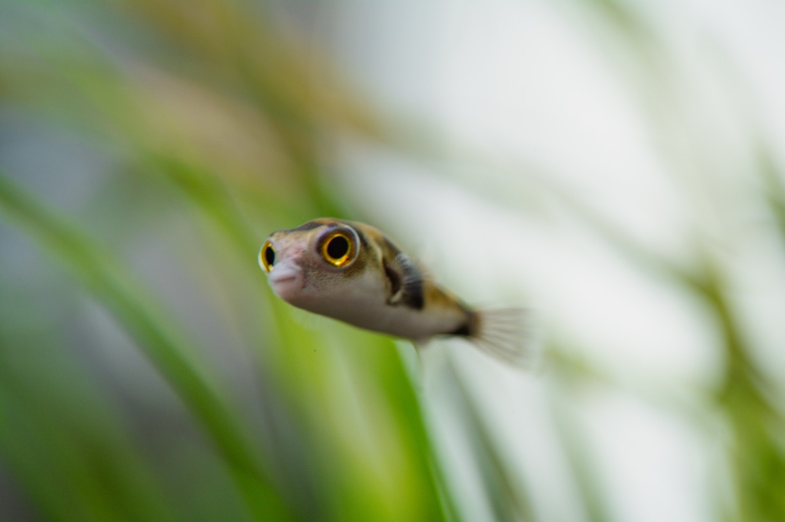

ELIZABETH WANG is a designer whose practice focuses on interactive language across digital and physical spaces. Her work moves between independent and collaborative contexts, often within multidisciplinary teams, bringing a visual design sensibility grounded in the user experience.
Currently, she is a designer at Microsoft.
and she has a pet fish.

01
Microsoft
Product design
San Francisco CA, 2021 – Present
Proposed a unified event experience across Microsoft with engineering, PM, and leadership, resulting in the Microsoft Teams Events app, a cross-team effort with Microsoft Teams and Engage.
Designed Teams Q&A and Engage events, used by millions of monthly active users, by consolidating Teams Q&A with AMAs, live events, and webinars into a single experience. Shipped in 2026 and became the foundation for the Events app.
02
Microsoft
Product design internship
San Francisco CA, 2020
Owned the end-to-end design of data visualization for conversation performance on the Yammer design team.
03
curology
Motion design internship
Remote, 2020
Created motion design for influencer ad campaigns, pairing kinetic typography with video, and designed and animated custom emojis to accompany the content.
04
Doblin, Deloitte
Design consultancy internship
New York City NY, 2019
Partnered with a multidisciplinary team to develop and present insight-driven solutions for a client’s product system, and produced an application prototype and icon library.